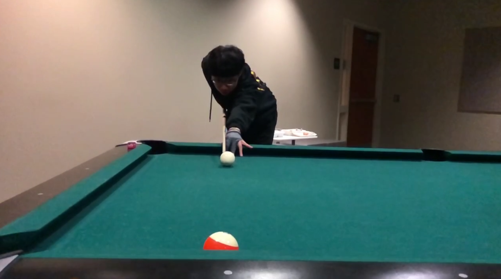
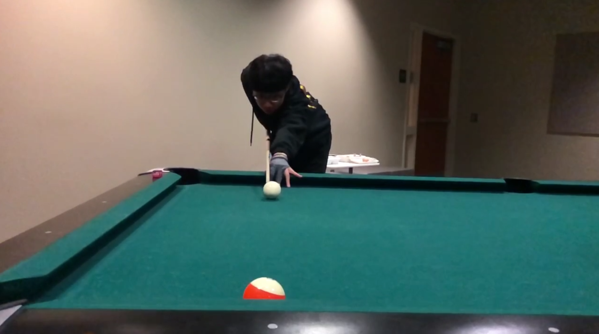

| Period | Activity |
|---|---|
| Primary School | Table tennis |
| Junior high | Basketball |
| Senior high | Pen beat |
| College | Pool |
 

Pen-beat has become one of my most significant hobbies since grade
11. It is an amazing music
style which only requires the movement of
the performers' hands and two pens to imitate the
sound of a drum kit.
I have been strongly drawn to the charm of pen-beat since I was first
introduced to it online. The strong beats and special rhythm deeply
attracted me, and ever since,
practicing pen-beat has become an essential
part of my daily schedule.
For other people, pens may be just tools for writing, but for me, they
are the key to my
creative side. The random tapping on the table always creates unexpected beautiful
sounds,
thus giving me inspirations for new musical creations. Now wherever I go, I plan to maximize
my creativity and create the most unique pieces of music with pen-beat.
I started to play pool when I was in high school. After I watched the video of the Ronnie O'Sullivan's Fastest 147
in just 5 minutes and 8 seconds, I was totally shocked by how charmful this sports is. Then I began to play pool in a
frequency
about once a week during my last high school year. However, my skills improved quite slowly due to my lack of practice.
Then I went to UCLA, where I practiced playing pool almost everyday with my friend to hone my skills. Although I am a Math
major student, I am very proud to that I used to play pool for an average of at least 4 hours everyday during my freshman
year. That amount of efforts did pay back and I can feel that I am getting better and better after joining the UCLA billiards Club.